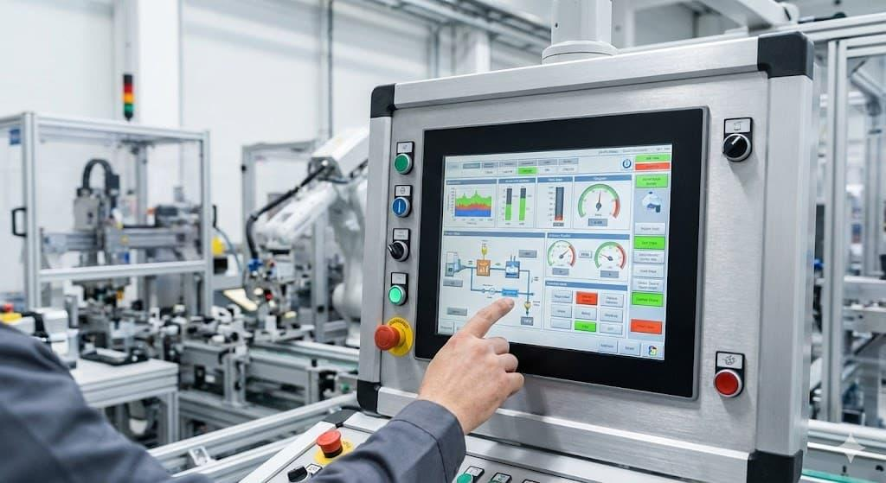
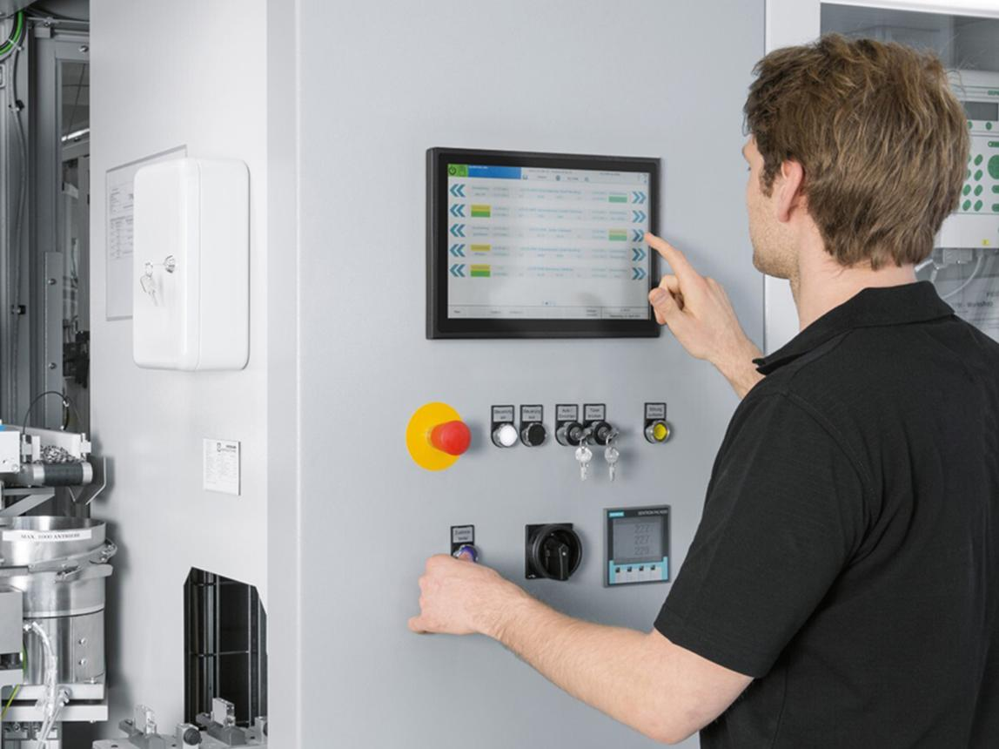
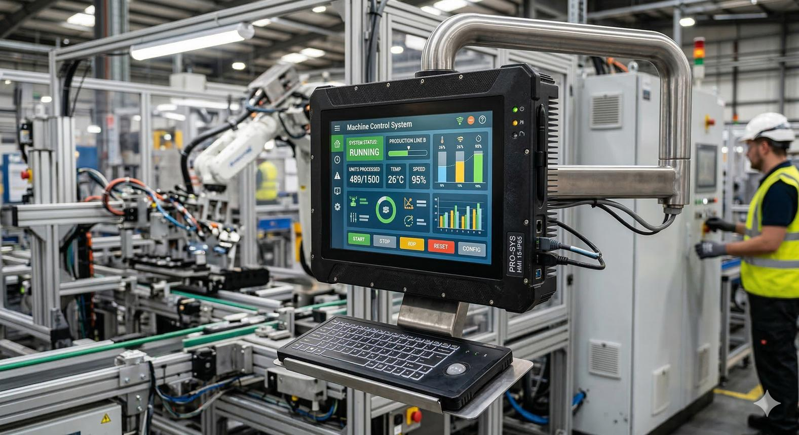

1. Definition and Purpose
HMI stands for Human-Machine Interface. It is the interface through which an operator observes machine conditions, issues permitted commands, acknowledges alarms, and interacts with an industrial control system.
HMI architecture describes how the operator interface connects to the PLC, field devices, SCADA systems, industrial networks, and supporting infrastructure.
In industrial automation, an HMI is not merely a screen displaying values. It is part of the operational interface between people and machines.
Typical HMI functions include:
- Displaying machine status, process values, and production information.
- Providing Start, Stop, Reset, and mode-selection commands where permitted.
- Displaying alarms, warnings, and diagnostic information.
- Allowing authorized changes to setpoints and parameters.
- Displaying trends, counters, cycle times, and production summaries.
- Helping maintenance personnel identify the cause of a breakdown.
For example, on an automotive production line, an HMI may show robot readiness, fixture status, conveyor conditions, cycle completion, interlock failures, and station alarms. The PLC normally executes the real-time control logic, while the HMI presents information and sends operator requests.
2. Basic HMI Architecture

A typical HMI system contains an operator interface, communication connection, PLC or controller, and field devices.
OPERATOR
|
v
+-------------+
| HMI |
| Screens |
| Commands |
| Alarms |
+-------------+
|
| Industrial communication
|
+-------------+
| PLC |
| Control |
| Logic |
+-------------+
|
I/O system
|
+---------+----------+
| | |
v v v
Sensors Drives Actuators
The signal and command paths work in both directions.
- PLC to HMI: Machine states, sensor values, alarms, faults, counters, and process values.
- HMI to PLC: Operator requests, permitted setpoint changes, reset requests, and mode selections.
The HMI should not be treated as a replacement for the PLC's control logic or the machine's safety system.
3. Main Components of an HMI System
| Component | Function | Example |
|---|---|---|
| Operator panel | Physical interface for the operator | Industrial touchscreen |
| HMI runtime | Executes the HMI application | Panel runtime or PC-based runtime |
| HMI project | Contains screens, tags, alarms, and configuration | Engineering project |
| PLC/controller | Executes machine-control logic | Siemens S7-1500 or Allen-Bradley ControlLogix |
| Communication driver | Exchanges data with the controller | Supported PLC communication driver |
| Industrial network | Carries data between devices | PROFINET or EtherNet/IP |
| Alarm system | Presents and records alarm conditions | Drive fault or sensor timeout |
| Historical storage | Stores trends, events, or production data when supported | Database or historian |
| User management | Controls access to protected functions | Operator and maintenance roles |
| Engineering computer | Used to develop, download, and maintain the HMI | HMI engineering workstation |
Not every HMI contains all these components. A basic machine panel may have no historian or external database, while a PC-based HMI system may contain extensive data collection and reporting functions.
4. Types of HMI Architecture
4.1 Basic Operator Panel

A basic HMI panel is installed near the machine and communicates with its controller.
Typical functions:
- Machine overview.
- Manual and automatic mode displays.
- Start and Stop requests.
- Fault and alarm display.
- Setpoint entry.
- Maintenance status.
Advantages: Simple architecture, direct operator access, and relatively low system complexity.
Limitations: Limited processing, storage, visualization, and multi-machine monitoring compared with a larger PC-based system. Actual capabilities depend on the panel.
4.2 PC-Based HMI

A PC-based HMI runs on an industrial computer or supported workstation.
It may support:
- More complex visualization.
- Multiple equipment screens.
- Larger alarm and event databases.
- Data logging and reports.
- Integration with databases and other applications.
- Multiple communication drivers.
The system requires suitable operating-system support, runtime licensing, backups, security controls, and maintenance.
4.3 SCADA-Based Architecture
SCADA stands for Supervisory Control and Data Acquisition. SCADA systems typically supervise multiple controllers, processes, or production areas rather than just one machine.
Operator / Supervisor
|
v
+------------------+
| SCADA Server or |
| Supervisory HMI |
+------------------+
|
Industrial Network
/ | \
v v v
PLC 1 PLC 2 PLC 3
| | |
Machine Conveyor Robot Cell
A SCADA architecture may provide centralized alarms, trends, reports, user management, and historical data.
A single HMI panel and a SCADA system can overlap in functionality. The distinction is primarily the system's scope, architecture, and supervisory requirements, not merely the size of the screen.
4.4 Distributed HMI Architecture
A distributed architecture separates operator interfaces, servers, data storage, and controllers across multiple computers or devices.
For example:
- Machine-level HMIs provide local operation.
- An HMI or SCADA server collects data from multiple PLCs.
- A historian stores process values and events.
- Engineering workstations maintain projects.
- Authorized clients view production status.
This architecture can improve centralized monitoring and scalability, but introduces dependencies on networks, servers, accounts, software versions, and system availability.
5. HMI Architecture by System Layer
An industrial HMI can be understood as part of a wider automation hierarchy.
| Layer | Main role | Examples |
|---|---|---|
| Field layer | Interacts with the physical process | Sensors, switches, valves, motors |
| Control layer | Executes real-time control | PLCs, motion controllers |
| Operator-interface layer | Allows human interaction | HMI panels, machine terminals |
| Supervisory layer | Monitors multiple machines or processes | SCADA |
| Data and information layer | Stores, analyzes, and reports information | Historian, SQL database, production reports |
| Enterprise layer | Supports wider business operations | MES, ERP and production planning systems |
This is a conceptual hierarchy. Actual deployments may combine layers, split them across systems, or omit some layers.
An HMI generally sits between the operator and the control system. It may also communicate with supervisory and data systems, depending on its design.
6. HMI Communication Architecture
The HMI must communicate with the PLC or other data sources to display live values and send operator requests.
6.1 Direct HMI-to-PLC Communication
HMI <----> PLC <----> I/O <----> Machine
The HMI communicates directly with the controller using a supported protocol or driver.
Typical applications:
- Standalone machines.
- Individual assembly stations.
- Conveyors.
- Robot cells.
- Small production systems.
Advantages include a straightforward architecture and fewer intermediary components.
The main limitation is that each HMI's data access and capabilities depend on its configured connection and the controller's supported communication services.
6.2 HMI-to-SCADA-to-PLC Architecture
HMI Client
|
v
SCADA Server
|
v
PLC Network
|
+---- PLC 1
+---- PLC 2
+---- PLC 3
In this arrangement, the SCADA system provides centralized supervision and may distribute information to multiple operator clients.
Possible benefits include centralized alarm management, historical data, common user management, and multi-machine monitoring.
However, the architecture introduces additional dependencies. A server failure may affect supervisory functions even when the PLCs continue controlling their machines.
6.3 HMI-to-Database Architecture
PLC <----> HMI / SCADA <----> Database
|
v
Reports / Trends
The HMI or SCADA application collects selected information and stores it in a database or historian.
Examples include:
- Production counts.
- Machine cycle times.
- Alarm histories.
- Fault durations.
- Quality measurements.
- Downtime records.
A database is not normally required for every HMI function. Real-time machine control should remain appropriately separated from reporting and historical storage.
7. HMI Communication Protocols
The communication protocol determines how the HMI exchanges information with a controller or other device.
| Protocol or technology | Typical application | Important consideration |
|---|---|---|
| PROFINET | Siemens PLC and industrial device communication | Requires compatible devices and correct network configuration |
| EtherNet/IP | Allen-Bradley and compatible industrial devices | Uses CIP over Ethernet |
| Mitsubishi SLMP | Communication with supported Mitsubishi PLCs | Support depends on the CPU and configuration |
| Modbus TCP | Industrial communication over Ethernet | Requires compatible data addressing and configuration |
| Modbus RTU | Serial communication | Requires compatible serial settings and wiring |
| OPC UA | Structured data exchange between supported systems | Requires appropriate server/client configuration and security |
| Vendor-specific drivers | Communication with supported PLCs | Driver compatibility and addressing must be verified |
The presence of an Ethernet port does not guarantee that two devices can exchange PLC data. The protocol, driver, addressing, permissions, and device configuration must all be compatible.
8. HMI Project Architecture
An HMI engineering project commonly contains several interconnected elements.
| Project element | Purpose |
|---|---|
| Screens | Visual interface presented to operators |
| Tags | Variables displayed or used by the HMI |
| Connections | Communication settings for PLCs and other data sources |
| Alarms | Conditions, messages, priorities, and acknowledgements |
| Trends | Time-based display of selected values |
| Navigation | Movement between screens |
| User roles | Permissions for protected functions |
| Scripts | Supported calculations or application-specific behavior |
| Recipes | Groups of production parameters where supported |
| Data logging | Storage of selected process values and events |
| Reports | Production or diagnostic summaries |
| Languages | Localized text for supported applications |
A well-structured project separates reusable screen elements, equipment-specific data, alarm definitions, and communication settings. This makes later maintenance and expansion easier.
9. Screen Architecture
A useful HMI screen hierarchy organizes information from general machine status to detailed diagnostics.
Main Overview
|
+-- Machine Overview
| |
| +-- Station Details
| +-- Motor / Drive Details
| +-- Robot Interface
|
+-- Manual Operation
|
+-- Alarms and Diagnostics
|
+-- Production Information
|
+-- Maintenance
|
+-- I/O Status
+-- Device Diagnostics
+-- Communication Status
Common screen types
Overview screen: Displays the main operating state, production status, active faults, and key process information.
Equipment screen: Displays the status and permitted controls of an individual motor, cylinder, drive, robot interface, or station.
Alarm screen: Lists active and historical alarms, timestamps, priorities, and acknowledgement status.
Maintenance screen: Provides diagnostic values, I/O states, device health, and maintenance information for authorized users.
Parameter screen: Allows authorized personnel to inspect or modify approved setpoints and configuration values.
Trend screen: Displays the change in process values over time.
Screen design principles
- Use consistent names and symbols.
- Make critical states easy to identify.
- Separate operator commands from diagnostic information.
- Display units and meaningful engineering ranges.
- Make alarm messages specific enough to guide troubleshooting.
- Avoid excessive colors, animations, and unnecessary graphics.
- Protect maintenance and engineering functions through appropriate access controls.
An HMI should help an operator understand what the machine is doing and why it cannot proceed. A screen full of blinking objects is not a diagnostic strategy.
10. HMI, PLC and SCADA Responsibilities
These systems cooperate, but their roles are different.
| Function | PLC | HMI | SCADA |
|---|---|---|---|
| Execute real-time machine logic | Primary role | No | Usually supervisory, not the primary machine-control layer |
| Read field I/O | Through configured I/O | Usually through PLC or supported device interfaces | Usually through PLCs or communication services |
| Display machine status | Limited local indicators or supported display | Primary role for local operation | Primary role for broader supervision |
| Accept operator commands | Evaluates permitted commands | Provides the operator interface | May provide supervisory commands |
| Execute safety functions | Safety-rated controller where required | Must not replace safety logic | Must not replace safety logic |
| Manage alarms | Detects and exposes relevant conditions | Displays and acknowledges supported alarms | May centralize alarms across machines |
| Store historical data | Limited or application-dependent | Possible on supported systems | Common in larger systems |
| Generate production reports | Provides source data | Possible | Common in supervisory systems |
The exact allocation varies by application. Some HMI products contain substantial data-processing features, and some SCADA platforms execute supervisory logic. The essential requirement is to assign control, safety, visualization, and historical-data responsibilities deliberately.
11. HMI Tags: An Introduction
Tags are named variables that represent values used by an HMI application.
Examples include:
Motor_Run_Command
Motor_Running_Feedback
Drive_Ready
Fault_Active
Production_Count
Cycle_Time
Temperature_Value
A tag may refer to a PLC variable, an HMI-internal variable, or a value provided by another supported data source.
For example, a motor-status indicator may read Motor_Running_Feedback from the PLC and display the current state as Running or Stopped.
A numeric display may read Temperature_Value and present the value with the appropriate engineering unit.
A Start button may write a request to a PLC tag. The PLC must then validate the request and determine whether the machine is permitted to start.
Important distinction: An HMI tag is not necessarily a physical input or output. It is a data reference used by the HMI. Its underlying source may be a PLC tag, a memory location, an internal HMI variable, or another configured source.
The detailed study of tag types, addressing, data types, naming conventions, scaling, and PLC mapping comes in the next topic.
12. HMI Alarms and Events
Alarms communicate abnormal conditions that require operator attention. Events record occurrences or actions, whether or not they require immediate intervention.
Examples of alarms:
- Drive fault.
- Safety-system fault indication.
- Sensor timeout.
- PLC communication failure.
- High temperature.
- Low air pressure.
- Robot not ready.
- Production sequence timeout.
Examples of events:
- Operator logged in.
- Machine changed from Manual to Auto.
- Recipe selected.
- Production batch started.
- Maintenance mode entered.
Alarm lifecycle
Condition becomes active
|
v
Alarm is generated
|
v
Operator sees alarm
|
v
Condition is investigated
|
v
Fault condition clears
|
v
Alarm clears according to configuration
Acknowledgement and clearing are different actions. Acknowledging an alarm generally records that it has been recognized. It does not necessarily mean the underlying fault has been corrected.
The alarm design should identify the fault clearly and help the operator determine the appropriate response.
13. HMI Security and Access Control
HMI systems can expose commands and parameters that affect equipment behavior. Access control is therefore part of the architecture, not an optional decoration.
Typical roles include:
- Operator: Normal production operation and permitted acknowledgements.
- Maintenance: Diagnostic screens and approved maintenance functions.
- Engineer: Configuration and commissioning functions.
- Administrator: User, security, and system configuration.
These are illustrative roles. Actual permissions should reflect the plant's procedures.
Important controls include:
- Unique user accounts where supported.
- Appropriate password policies.
- Restricted access to parameter changes.
- Controlled engineering connections.
- Backups and change records.
- Network segmentation and secure remote access.
- Approved procedures for USB media and software updates.
HMI security should complement PLC access controls and industrial network security. A hidden screen or obscure button is not a reliable security boundary.
14. Common HMI Problems and Troubleshooting
| Symptom | Possible cause | First checks |
|---|---|---|
| HMI shows communication error | PLC offline, network fault, incorrect driver or connection settings | Check PLC status, network and HMI connection |
| Values remain frozen | Stale communication, wrong tag mapping or data source issue | Compare HMI values with online PLC values |
| Button press has no effect | PLC permissive false, wrong command tag or access restriction | Monitor the command and relevant interlocks |
| Incorrect value displayed | Wrong address, scaling, data type or engineering unit | Compare raw PLC value with HMI conversion |
| Alarm does not appear | Alarm trigger configuration, wrong tag, disabled alarm or filtering | Verify the trigger condition and alarm settings |
| Alarm cannot be acknowledged | User permissions or alarm configuration | Check alarm state and user access |
| Screen navigation fails | Incorrect navigation action or project configuration | Inspect the screen event and destination |
| HMI runtime does not start | Runtime configuration, licensing, operating-system or project issue | Check runtime logs and compatibility |
| HMI loses connection intermittently | Network instability, device restart or resource issue | Check network diagnostics and device logs |
| HMI is slow | Excessive communication polling, heavy graphics, scripts or logging | Review communication load and runtime performance |
Recommended troubleshooting order
- Determine whether the problem affects one screen, one tag, one PLC, or the whole HMI.
- Check the HMI runtime and communication status.
- Verify the PLC is operating and the correct project is loaded.
- Compare the HMI tag with the actual PLC value.
- Check addressing, data types, scaling, and access permissions.
- Review alarms, diagnostics, and communication logs.
- Apply the correction and verify normal behavior.
15. Practical Example: Automotive Production Station
Consider an HMI for a robotic assembly station.
The main overview screen displays:
- Station mode.
- Robot readiness.
- Fixture status.
- Part-present signals.
- Cycle state.
- Active alarms.
- Production count.
The operator requests a cycle using the HMI. The PLC evaluates the request against the required permissives and coordinates the machine sequence.
Operator presses Cycle Start
|
v
HMI writes start request
|
v
PLC evaluates permissives
|
+-----+-----+
| |
Permissives Permissives
satisfied not satisfied
| |
v v
Execute cycle Keep cycle inhibited
| |
v v
Update status Display relevant fault
and feedback or missing condition
|
v
HMI displays cycle progress
This architecture keeps the PLC responsible for determining whether the cycle can proceed. The HMI requests an action and displays the result rather than independently deciding that the machine is safe to operate.
16. Interview Questions and Answers
Q1. What is an HMI?
An HMI is the interface through which operators monitor machine conditions and issue permitted commands to an industrial control system.
Q2. What is the difference between HMI and SCADA?
An HMI commonly provides local operator interaction with a machine or process. SCADA typically supervises multiple controllers or process areas and may provide centralized alarms, trends, historical data, and reports.
Q3. Does the HMI control the machine directly?
The HMI sends commands or requests through configured interfaces. The PLC or appropriate controller executes the control logic and validates the conditions required for operation.
Q4. What is an HMI tag?
An HMI tag is a named data reference used by the HMI. It may refer to a PLC variable, an internal HMI variable, or another configured data source.
Q5. What is the difference between an alarm and an event?
An alarm indicates an abnormal condition requiring attention. An event records an occurrence or action, which may or may not require immediate intervention.
Q6. Why can an HMI show a wrong value while the PLC is operating correctly?
Possible causes include incorrect tag mapping, scaling, data type, engineering units, communication configuration, or stale data.
Q7. Why should the PLC validate HMI commands?
An HMI request must not bypass the controller's operating conditions, interlocks, or applicable safety design. The PLC determines whether the requested action is permitted.
Q8. What is the purpose of HMI user management?
It restricts access to functions according to authorized responsibilities, particularly maintenance, engineering, parameter changes, and system configuration.
Q9. What happens if the HMI communication fails?
The operator may lose visibility or the ability to issue commands through that HMI. The PLC may continue executing its program, depending on the system design. The actual machine response must be established from the control architecture.
Q10. Why are HMI backups important?
They preserve the screens, tags, connections, alarm definitions, configuration, and other project components needed to restore or modify the operator interface.
17. Practical Study Exercises
Use an approved training system or simulator.
- Identify the HMI panel or runtime and its engineering software.
- Determine which PLC the HMI communicates with.
- Draw the HMI-to-PLC-to-I/O architecture.
- Identify the main overview, manual operation, alarm, and maintenance screens.
- Trace one displayed value back to its source.
- Identify one HMI command and the PLC conditions that validate it.
- Inspect the alarm trigger, message, acknowledgement, and clearing behavior.
- Identify the configured communication driver and network.
- Review user roles and protected functions.
- Back up the HMI project and record its software and runtime versions.
18. Final Mental Model
HMI architecture connects the operator interface to the control system and, where required, to supervisory and historical-data systems.
The HMI presents information and accepts permitted requests. The PLC executes machine-control logic. The communication network transfers data between systems. SCADA and database layers provide broader supervision, historical records, and reporting when the application requires them.
For troubleshooting, follow the path from the displayed screen to the HMI tag, from the tag to its data source, and from the PLC variable to the actual control logic and field equipment.
Next topic: 02_Tags - Tags